전산응용기계제도기능사 (2005-04-03 기출문제)
1과목: 기계재료 및 요소
1. 테이퍼 핀의 테이퍼와 호칭 표시는?
- 1/100 - 큰 쪽의 지름
- 1/50 - 작은 쪽의 지름
- 1/50 - 큰 쪽의 지름
- 1/100 - 작은 쪽의 지름
(정답률: 68%)

2. 다음 중 섬유 강화 금속(FRM)의 용도로 가장 알맞은 것은?
- 파이프 이음쇠
- 절삭 공구
- 원자로 자기 장치
- 피스톤 헤드
(정답률: 33%)
3. 자동차의 핸들, 전동기의 축 등에 사용되며 축에 작은 삼각형 키 홈을 만들어 축과 보스를 고정시키는 것은?
- 스플라인 축
- 페더 키
- 세레이션
- 접선 키
(정답률: 44%)
4. 비중이 2.7이며 가볍고 내식성과 가공성이 좋으며 전기 및 열전도도가 높은 금속재료는?
- 금(Au)
- 알루미늄(Aℓ)
- 철(Fe)
- 은(Ag)
(정답률: 79%)
5. 후크의 법칙을 표현한 식으로 맞는 것은? (단, σ: 응력, E : 영률, ε: 변형율 이다.)
- σ= 2E/ε
- E = σ/ε
- E = ε/σ
- ε= 2E·σ
(정답률: 44%)
6. 다음 중 운동용 나사에 해당하는 것은?
- 미터나사
- 유니파이나사
- 볼나사
- 관용나사
(정답률: 56%)
7. 다음 열처리의 방법 중 강을 경화시킬 목적으로 실시하는 열처리는?
- 담금질
- 뜨임
- 불림
- 풀림
(정답률: 76%)
8. 다음 중 두 축이 직각으로 만났을 때 동력을 전달하려면 어떤 기어를 사용하여야 하는가?
- 스퍼기어
- 헬리컬기어
- 래크
- 베벨기어
(정답률: 51%)
9. 6·4 황동에 Fe 1~2% 정도를 첨가한 합금을 무엇이라고 하는가?
- 델타메탈(delta metal)
- 애드미럴티 황동(admiralty brass)
- 네이벌 황동(naval brass)
- 주석 황동(tin brass)
(정답률: 66%)
10. 철-탄소계 상태도에서 주철의 공정점은?
- 4.3%C - 1,145℃
- 2.1%C - 1,145℃
- 0.86%C - 738℃
- 4.3%C - 738℃
(정답률: 41%)
2과목: 기계가공법 및 안전관리
11. 다음 중 전동용 기계요소에 해당하는 것은?
- 리벳
- 볼트와 너트
- 핀
- 체인
(정답률: 79%)
12. 다음 중 선박의 복수 기관에 많이 사용되며, 용접용으로도 쓰이는 것으로서, 1% 내외의 주석을 함유한 황동은?
- 켈밋 합금
- 쾌삭 황동
- 델타메탈
- 애드미럴티 황동
(정답률: 31%)
13. 일반적인 너트의 풀림을 방지하기 위하여 사용하는 방법이 아닌 것은?
- 와셔에 의한 방법
- 나비너트에 의한 방법
- 로크너트에 의한 방법
- 멈춤 나사에 의한 방법
(정답률: 57%)
14. 고속도강의 담금질 온도는 몇 ℃인가?
- 750 ~ 900℃
- 800 ~ 900℃
- 1200 ~ 1350℃
- 1500 ~ 1600℃
(정답률: 41%)
15. 길이에 비하여 지름이 아주 작은 바늘모양의 롤러(직경 2∼5mm)를 사용한 베어링은?
- 니들 롤러 베어링
- 미니어처 베어링
- 데이더 롤러 베어링
- 원통 롤러 베어링
(정답률: 61%)
16. 표면 거칠기 측정 방법이 아닌 것은?
- 표면 거칠기 표준편에 의한 방법
- 영상식 측정기에 의한 방법
- 촉침식 측정기에 의한 방법
- 광 절단식 측정기에 의한 방법
(정답률: 40%)
17. 직립 밀링 작업시 기본적으로 가장 많이 사용되며, 지름에 비해 길이가 긴 커터는?
- 플레인 커터
- 메탈소오
- 엔드밀
- 헬리컬 커터
(정답률: 57%)
18. 보통 일감에 사용되는 선반 센터 끝의 각도는?
- 55°
- 60°
- 75°
- 90°
(정답률: 63%)
19. 슬리이브의 최소눈금이 0.5mm인 마이크로미터에서 딤블(thimble)의 원주 눈금이 100 등분 되었다면 최소한 읽을 수 있는 값은?
- 0.01mm
- 0.0⑤mm
- 0.002mm
- 0.⑤mm
(정답률: 72%)
20. 절삭속도 20 m/min인 드릴의 지름이 10 mm 일 때, 드릴의 회전수는 몇 rpm 정도인가?
- 600rpm
- 637rpm
- 550rpm
- 757rpm
(정답률: 62%)
21. CNC프로그램의 기호와 그 의미가 잘못 연결된 것은?
- M - 보조 기능
- T - 공구 기능
- S - 절삭 기능
- F - 이송 기능
(정답률: 56%)
22. 전기 도금의 원리와 반대로 연마하려는 일감을 양극으로하여 가공하는 방법은?
- 전해 연마
- 전주 가공
- 이온가공
- 플라스마 가공
(정답률: 61%)
23. 테이퍼 깎기 장치와 밀링 커터의 여유각을 깎는 릴리빙(Relieving) 장치 등의 부속 장치가 있는 선반은?
- 모방 선반
- 터릿 선반
- 정면 선반
- 공구 선반
(정답률: 35%)
24. 연삭에서 결합제를 금속으로 사용하는 숫돌 바퀴는?
- 탄성 숫돌
- 다이아몬드 숫돌
- 비트리파이드 숫돌
- 실리케이트 숫돌
(정답률: 41%)
25. 절삭가공시 칩이 연속적으로 흘러나오며, 가공면이 깨끗하고 절삭작용이 원활한 칩의 형태는?
- 경작형 칩
- 균열형 칩
- 전단형 칩
- 유동형 칩
(정답률: 68%)
3과목: 기계제도
26. 하나의 점을 정의할 수 없는 경우는?
- 평행하지 않은 두 직선의 교점을 점으로 지정한다.
- 원의 중심점에 점을 지정한다.
- 직선과 원간의 교점을 점으로 지정한다.
- 두 원의 접점을 점으로 지정한다.
(정답률: 34%)
27. ISO 규격에 있는 관용 테이퍼수나사의 기호로 맞는 것은?
- G
- PF
- R
- E
(정답률: 63%)
28. 축용 게이지 제작에 사용되는 IT공차의 급수는?
- IT01 - IT4
- IT5 - IT8
- IT8 - IT12
- IT11 - IT18
(정답률: 48%)
29. 다음 스프링 제도에 대한 설명 중 잘못 설명한 것은?
- 코일스프링은 원칙적으로 하중이 걸린 상태에서 그린다.
- 겹판스프링은 원칙적으로 스프링 판이 수평한 상태에서 그린다.
- 그림에 단서가 없는 코일스프링은 오른쪽으로 감긴 것을 표시한다.
- 코일스프링이 왼쪽으로 감긴 경우는 "감긴방향 왼쪽"이라고 표시한다.
(정답률: 73%)
30. 다음은 2차원에서의 변환행렬이다. 틀린 것은?
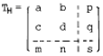
- a, b, c, d는 회전(rotation), 스케일링(scaling)에 관계된다.
- p, q는 대칭 변환에 관계된다.
- m, n은 이동(translation)에 관계된다.
- s는 전체적인 스케일링(overall scaling)에 관계된다.
(정답률: 37%)
31. 구름 베어링 제도시 계통을 표시하는 경우의 도시방법 중 다음 그림이 뜻하는 것은?
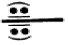
- 앵귤러 볼 베어링
- 원통 롤러 베어링
- 자동조심 볼 베어링
- 니들 롤러 베어링
(정답률: 24%)
32. 다음 기호 중 숫자와 병기하여 사용할 수 없는 것은?
- Sø
- SR
- ⊠
- □
(정답률: 80%)
33. 다음 그림과 같은 투상도를 무슨 투상도라 하는가?
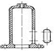
- 회전 투상도
- 국부 투상도
- 부분 투상도
- 보조 투상도
(정답률: 70%)
34. 다음 입·출력 장치의 연결이 잘못된 것은?
- 입력장치 - 키보드, 라이트펜
- 출력장치 - CRT, 프린터, COM
- 입력장치 - 트랙볼, Tablet
- 출력장치 - Digitizer, 플로터
(정답률: 57%)
35. 아래 기하 공차를 바르게 해석한 것은?
- 데이텀 A를 기준으로 원의 윤곽이 ø0.⑤mm이내에 있어야 한다.
- 데이텀 A를 기준으로 원의 대칭도가 ø0.⑤mm이내에 있어야 한다.
- 데이텀 A를 기준으로 원의 진원도가 ø0.⑤mm이내에 있어야 한다.
- 데이텀 A를 기준으로 원의 위치가 ø0.⑤mm이내에 있어야 한다.
(정답률: 74%)
36. 다음 중 구멍 50에 대한 구멍 기준식 끼워맞춤 공차기호 기입방법으로 옳은 것은?
- Ø50H7
- Ø50h7
- S50h7
- s50H7
(정답률: 69%)
37. 도형이 이동한 중심 궤적을 표시할 때 사용하는 선은?
- 가는 실선
- 굵은 실선
- 가는 2점 쇄선
- 가는 1점 쇄선
(정답률: 41%)
38. 일반적인 CAD 시스템으로 해칭(hatching)을 하고자 한다. 해칭영역을 지정한 후에 설정할 수 있는 항목이 아닌 것은?
- 해칭의 패턴
- 해칭선의 굵기
- 해칭선의 각도
- 해칭선의 간격
(정답률: 50%)
39. 다음 기어의 쌍 중 회전 가능한 쌍은?(오류 신고가 접수된 문제입니다. 반드시 정답과 해설을 확인하시기 바랍니다.)
- 잇수=100, 피치원의 지름=400과 잇수=80, 피치원의 지름=320
- 잇수=80, 피치원의 지름=320과 잇수=70, 피치원의 지름=210
- 잇수=60, 피치원의 지름=320과 잇수=80, 피치원의 지름=320
- 잇수=100, 피치원의 지름=400과 잇수=50, 피치원의 지름=300
(정답률: 52%)
40. 호칭지름 40㎜, 피치가 7㎜인 미터 사다리꼴 왼나사의 표시 방법은?
- TM40 × 7LH
- Tr40 × 7LH
- TM40 × 7H
- Tr40 × 7H
(정답률: 63%)
41. CAD 시스템의 도입 효과로 볼 수 없는 것은?
- 품질향상
- 원가상승
- 표준화
- 경쟁력 강화
(정답률: 78%)
42. IT 기본 공차에 대한 설명으로 틀린 것은?
- IT 기본 공차는 치수 공차와 끼워맞춤에 있어서 정해진 모든 치수 공차를 의미한다.
- IT 기본 공차의 등급은 IT01부터 IT18까지 20등급으로 구분되어 있다.
- IT 공차 적용시 제작의 난이도를 고려하여 구멍에는 ITn-1, 축에는 ITn을 부여한다.
- 끼워맞춤 공차를 적용할 때 구멍일 경우 IT6∼IT10 이고, 축일 때에는 IT5∼IT9이다.
(정답률: 58%)
43. 정면도의 정의로 가장 옳은 것은?
- 물체의 각면 중 가장 그리기 쉬운면을 그린 그림
- 물체의 뒷면을 그린 그림
- 물체를 위에서 보고 그린 그림
- 물체 형태의 특징을 가장 뚜렷하게 나타내는 그림
(정답률: 82%)
44. 다음 용어의 뜻으로 맞지 않는 것은?
- 허용한계치수 : 최대허용치수와 최소허용치수로 나눈다.
- 기준치수 : 치수허용한계의 기준이 되는 치수
- 치수허용차 : 허용한계치수와 기준치수의 관계를 결정하는데 기초가 되는 치수의 차
- 기준선 : 허용한계치수 또는 끼워맞춤을 도시할 때 치수허용차의 기준이 되는 선
(정답률: 47%)
45. 다음 등각도를 3각법으로 투상할 때 평면도로 맞는 것은?
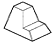
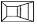
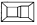
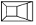
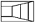
(정답률: 49%)
46. 특수한 가공을 하는 부분 등 특별한 요구사항을 적용할 수 있는 범위를 표시하는데 사용하는 선은?
- 굵은 1점 쇄선
- 가는 2점 쇄선
- 가는 실선
- 굵은 실선
(정답률: 70%)
47. 다음 치수 기입에 관한 설명 중 옳은 것은?
- 도형의 외형선이나 중심선을 치수선으로 대용하여 사용할 수 있다.
- 치수는 되도록 정면도에 집중하여 기입한다.
- 치수는 되도록 계산해서 구할 필요가 있도록 한다.
- 치수 숫자의 자리수가 많은 경우에는 매 3자리마다 콤마를 붙인다.
(정답률: 63%)
48. "6008C2P6"는 베어링 호칭 번호의 보기이다. 08의 의미는 무엇인가?
- 베어링 계열번호
- 안지름 번호
- 틈새기호
- 등급기호
(정답률: 84%)
49. 다음 중 부품의 위치를 고정하기 위하여 축에 홈을 파고 사용하는 부품은?
- 멈춤링
- 오일시일
- 패킹
- 플러머블록
(정답률: 42%)
50. 기어제도시 이끝원에 사용하는 선의 종류는?
- 가는 2점 쇄선
- 가는 1점 쇄선
- 굵은 실선
- 가는 실선
(정답률: 57%)
51. 다음 스퍼기어 요목표에서 피치원 지름은?
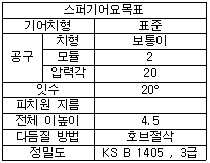
- 10 ㎜
- 20 ㎜
- 30 ㎜
- 40 ㎜
(정답률: 73%)
52. 다음은 도면에 관련된 내용이다. 틀린 것은?
- 도면의 폭과 길이 비는 1:√2 이다.
- A2 도면의 크기는 420x594 이다.
- 도면은 말아서 보관할 때는 그 안지름을 40㎜ 이상으로 하는 것이 좋다.
- 도면을 접어서 보관할 경우에는 A3의 크기로 한다.
(정답률: 63%)
53. 다음 기호 중 안전밸브를 나타낸 것은?
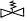
(정답률: 31%)
54. 리벳에 대한 호칭법 및 도시법에 대한 설명 중 틀린 것은?
- 리벳의 호칭방법은 규격번호, 종류, 호칭지름 x 길이, 재료 순으로 표시한다.
- 둥근머리 리벳의 길이는 머리부분을 제외한다.
- 리벳의 지름과 구멍의 지름은 같아야 한다.
- 리벳은 길이 방향으로 단면하여 도시하지 않는다.
(정답률: 48%)
55. 스프로킷 휠의 도시법에서 피치원은 무슨 선으로 표시하는가?
- 가는 1점 쇄선
- 굵은 실선
- 가는 실선
- 굵은 1점 쇄선
(정답률: 69%)
56. 아래 그림과 같은 3차원 모델링 중 은선 처리가 가능하고 면의 구분이 가능하므로 일반적인 NC 가공에 가장 적합한 모델링은?
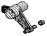
- 와이어프레임 모델링
- 이미지 모델링
- 솔리드 모델링
- 서피스 모델링
(정답률: 40%)
57. 다음과 같이 표시된 기하공차 도면에서 0.01 이 뜻하는 것은?
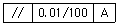
- 지정길이
- 공차값
- 참고 규격
- 평행도 등급
(정답률: 75%)
58. 다음 CAD 시스템의 입력장치 중 십자마크(커서)를 이동시켜 좌표를 지정하는 역할을 하는 장치가 아닌 것은?
- 마우스(mouse)
- 라이트 펜(light pen)
- 조이스틱(joy stick)
- 트랙볼(track ball)
(정답률: 33%)
59. 아래 그림은 몇 각법인가?
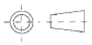
- 제 1 각법
- 제 2 각법
- 제 3 각법
- 제 4 각법
(정답률: 75%)
60. 아래 투상도는 어떤 물체를 보고 제 3각법으로 투상한 것이다. 이 물체의 등각 투상도로 적합한 것은?
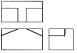
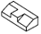
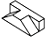
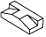
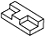
(정답률: 85%)